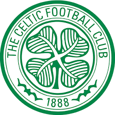
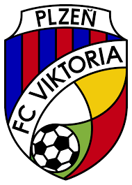
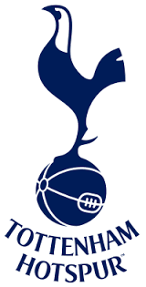

Grandes e poderosos times participaram dessa batalha mortal
Leverkusen foi um desses times. Ele tem um nome legal
Celtic também combateu, com seu japonês formidável
Plzen surpreendeu e assustou. Era um dos favoritos
Tottenhan tem um escudo bem bonito, e tem o Son
